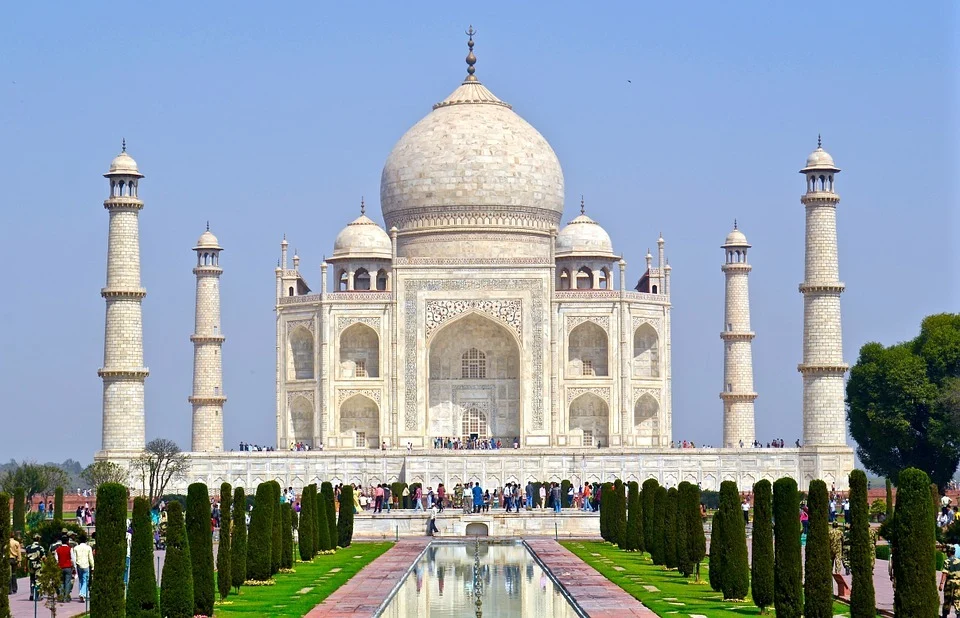
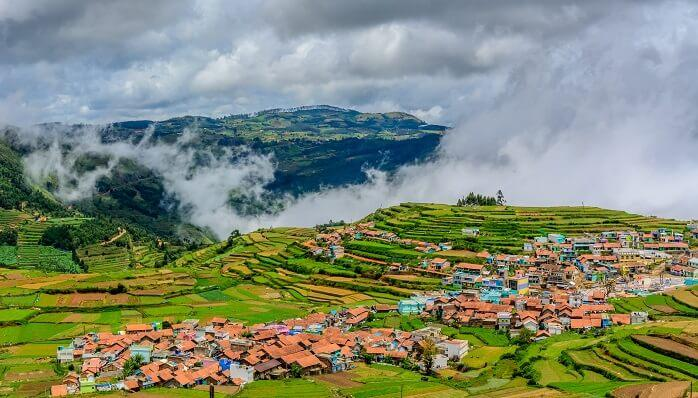

Famous Places in India

Taj Mahal

Jama Masjid

Kailasha Temple, It is said to have been carved from a single rock!

The Golden Temple of Amritsar

The Red Fort, New Delhi, Built by Shah Jahan in 1648 as the seat of Mughal power-a role it maintained until 1857-the magnificent crescent-shaped
Red Fort in New Delhi

The The Ellora Caves, Aurangabad The famous monumental Ellora Caves were built between the 5th and 10th centuries by Buddhist, Jain, and Hindu monks

Mysore Palace Completely rebuilt in 1897 after a devastating fire, this beautiful three-storied palace features highlights such as its
elegant square towers and domes

Hawa Mahal, located in Jaipur, the pink city of India.

Ooty,(short for Udhagamandalam) is a resort town in the Western Ghats mountains, in southern India's Tamil Nadu state.

Konark Sun Temple (1928), is a 13th-century CE Sun temple at Konark about 35 kilometres northeast from Puri on the coastline of Odisha, India.

Kerala backwaters

Kanyakumari Beach sandy beach at the southern tip of the Indian Peninsula known for sunsets & moonrises over 3 seas.

Marina Beach

Howrah Bridge

India Gate